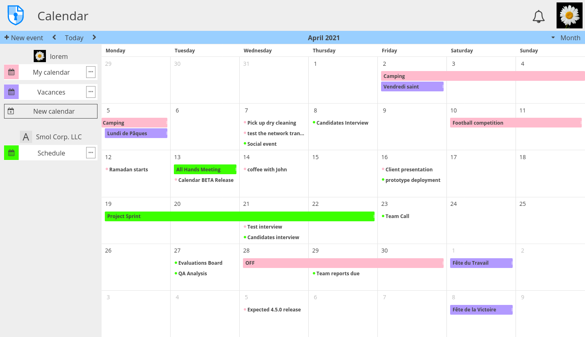

Collaboration / Social#
Profil#
Utilisateur·ices enregistré·es
Chaque utilisateur·ice enregistré·e sur CryptPad a une page de profil. Celle-ci est accessible dans le menu utilisateur·ice :
Menu utilisateur·ice (avatar en haut à droite) > Profil.
Profil personnel#
Votre profil peut maintenant être modifié directement depuis les préférences de votre compte.
Depuis là vous pouvez voir à quoi ressemble votre profil pour les autres utilisateur·ices, vous pouvez aussi réaliser les actions suivantes :
Copier la clé publique : Copie la clé utilisée par les administrateur·ices d'instance et/ou sur les instances avec abonnement.
Copier les données utilisateur·ice : En tant qu'administrateur·ice, ajouter les données utilisateur·ice dans votre presse-papier.
Partager : Copier le lien vers votre profil.
Profil utilisateur·ice#
Pour voir le profil d'un·e autre utilisateur·ice :
Liste d'utilisateur·ices d'un document où iels sont connecté·es > Clic sur leur nom,
Si l'utilisateur·ice est dans votre liste de contacts. Menu utilisateur·ice (avatar en haut à droite) > Contacts >
Double clicsur leur nom dans la liste.
Sur la page de profil d'un·e autre utilisateur·ice :
Envoyer une demande de contact : Ajoute cet·te utilisateur·ice à vos contacts une fois votre demande acceptée.
Masquer : Bloque les notifications et les messages venant de ce compte. L'utilisateur·ice ne sera pas informé·e que vous l'avez masqué.
Copier la clé publique : Copie la clé utilisée par les administrateur·ices d'instance et/ou sur les instances avec abonnement.
Agenda#

Pour ajouter un événement, cliquer sur l'heure ou la date souhaitée dans la vue du calendrier (faire glisser pour la durée). Ou utiliser Nouvel événement dans la barre d'outils.
Un formulaire de création d'événement est ensuite ouvert où un Titre est requis.
Vous pouvez optionnellement spécifier une Localisation et une Description. Le champ Description supporte la syntaxe Markdown pour formater son contenu.
Vous pouvez maintenant créer des événements récurrents, répéter :
Une fois, option par défaut
Chaque jour
Chaque semaine
Chaque mois
Chaque année
Chaque jour ouvré de la semaine
Personnalisé, voir ci-dessous :
Répéter tous les X jours, semaines, mois ou années
Se termine :
Jamais
À une date spécifique
Après X fois
Pour modifier un événement, le faire glisser vers la nouvelle date/heure ou alternativement :
Cliquersur l'événement pour ouvrir la vue détaillée.Cliquersur Éditer pour ouvrir un formulaire d'édition.
Barre d'outils#
Nouvel évènement
Menu Vue (à droite) : Mois, Semaine, Jour
: passer à la période précédente/suivante en fonction de la vue
Aujourd'hui : centrer la vue sur aujourd'hui
Partage & Accès#
Les calendriers CryptPad fonctionnent de la même manière que tout autre document en ce qui concerne le partage et la régulation de l'accès.
Le menu de chaque calendrier contient les options suivantes :
Modifier pour changer le nom et la couleur du calendrier
Partager et Accès fonctionnent de la même manière que tout autre document CryptPad. Voir Partage / Accès.
Importer et Exporter au format standard
.ics.Propriétés
Supprimer
Note
Lors de l'export d'un calendrier, les descriptions des événements sont exportées au format Markdown.
Les Équipes peuvent également disposer de calendriers accessibles à tou·tes les membres. Il suffit de partager un calendrier avec une équipe pour l'ajouter :
Partager > Contacts > Sélectionner l'équipe
Utilisateur·ices enregistré·es
Lorsque vous consultez un calendrier partagé via un lien, ajoutez-le à vos calendriers avec : Importer ce calendrier
Contacts#
Utilisateur·ices enregistré·es
Les contacts CryptPad simplifient et sécurisent la collaboration.
Ajouter un contact#
En partageant votre profil :
Copier le lien : menu utilisateur·ice (avatar en haut à droite) > Profil > Partager.
Paste and send through the means of your choice (preferably a secure mode of communication).
Votre contact doit ensuite cliquer sur Envoyer une demande de contact.
Vous recevez une notification avec la requête,
CliquerAccepter.
Sur la page profil d'un·e autre utilisateur·ice :
Cliquersur Envoyer une demande de contact.
Gérer les contacts#
Pour accéder à la page Contacts :
menu utilisateur·ice (avatar en haut à droite) > Contacts.
La liste de contact est à gauche de la fenêtre. Pour chaque contact :
: Masquer les messages et notifications.
: Supprimer.
: Indique que le contact est actuellement connecté.
Chat avec les contacts#
Sur la page Contacts, clic sur un contact dans la liste ouvre la conversation avec cette personne dans la fenêtre principale.
Écrire des messages dans le champ en bas de la fenêtre et les envoyer avec ou Entrée.
Récupérer l'historique du chat avec ou l'effacer avec .
Note
Pour le moment, la seule manière de recevoir une notification en cas de nouveau message est d'avoir l'application Contacts ouverte et les notifications de votre navigateur web activées. Nous travaillons à rendre possible la réception d'une notification CryptPad en cas de nouveau message.
Équipes#
Utilisateur·ices enregistré·es
Les équipes CryptPad sont des espaces partagés entre plusieurs utilisateur·ices. Une équipe possède son propre stockage CryptDrive, un chat et une liste de membres dont l'accès peut être régulé.
Note
Le nombre d'équipes qu'un·e utilisateur·ice de CryptPad peut rejoindre est limité à 5 pour des raisons de performance.
Pour créer une équipe :
Menu utilisateur·ice (avatar en haut à droite) > Équipes.
Nouvelle équipe.
Pour ouvrir une équipe existante :
Menu utilisateur·ice (avatar en haut à droite) > Équipes.
Équipes > Bouton Ouvrir de l'équipe souhaitée.
Drive d'équipe#
L'espace de stockage de l'équipe est similaire au CryptDrive utilisateur·ice, mais partagé entre les membres.
Membres#
L'onglet Membres permet de gérer les membres d'une équipe.
Inviter des membres#
Pour inviter des membres dans une équipe :
Onglet Membres > Inviter des membres.
Onglet Contacts : Sélectionner des contacts CryptPad pour les inviter. Les destinataires reçoivent une notification et peuvent accepter l'invitation.
Lien : Copier un lien à envoyer (de préférence par un moyen sécurisé). Le lien créé est à usage unique, il est invalidé une fois qu'un·e utilisateur·ice l'utilise pour rejoindre l'équipe.
Nom temporaire : Utilisé pour reconnaître l'invitation dans la liste des invitations en attente.
Mot de passe : Protection du lien contre une éventuelle interception. (facultatif)
Message personnalisé : message visible par le destinataire avant de décider d'accepter l'invitation.
Rôles et permissions#
Rôle |
Lecture-seule |
Édition |
Gérer les membres |
Gérer l'équipe |
|---|---|---|---|---|
Lecteur·ices |
✅ |
❌ |
❌ |
❌ |
Membres |
✅ |
✅ |
❌ |
❌ |
Administrateur·ices |
✅ |
✅ |
✅ |
❌ |
Propriétaires |
✅ |
✅ |
✅ |
✅ |
Permissions :
Lecture-seule : accéder aux dossiers et documents sans les modifier.
Édition : créer, modifier et supprimer des dossiers et documents.
Gérer les membres : inviter et révoquer les membres, changer les rôles jusqu'à Administrateur·ice.
Gérer l'équipe : changer le nom et l'avatar de l'équipe, ajouter ou révoquer les propriétaires de l'équipe, supprimer l'équipe.
Administration#
La liste des membres permet de gérer le rôle de chacun. Les propriétaires et administrateur·ices de l'équipe peuvent gérer les membres de rôle égal ou inférieur. Pour chaque membre :
Chat#
Le chat de l'équipe est similaire au chat avec un contacts, mais partagé entre tous les membres.
Onglet Administration#
Propriétaires de l'équipe
Clé publique de signature : Utilisée pour identifier l'équipe sur les instances avec abonnements.
Nom de l'équipe : Changer le nom de l'équipe.
Avatar de l'équipe : Importer/modifier un avatar pour l'équipe.
Télécharger le drive de l'équipe : Sauvegarde le contenu de tous les documents dans le CryptDrive de l'équipe. Quand cela est possible, des fichiers lisibles par d'autres logiciels sont téléchargés. Certaines applications produisent des fichiers qui ne sont lisibles que par CryptPad.
Suppression de l'équipe : Supprime définitivement l'équipe et ses documents.